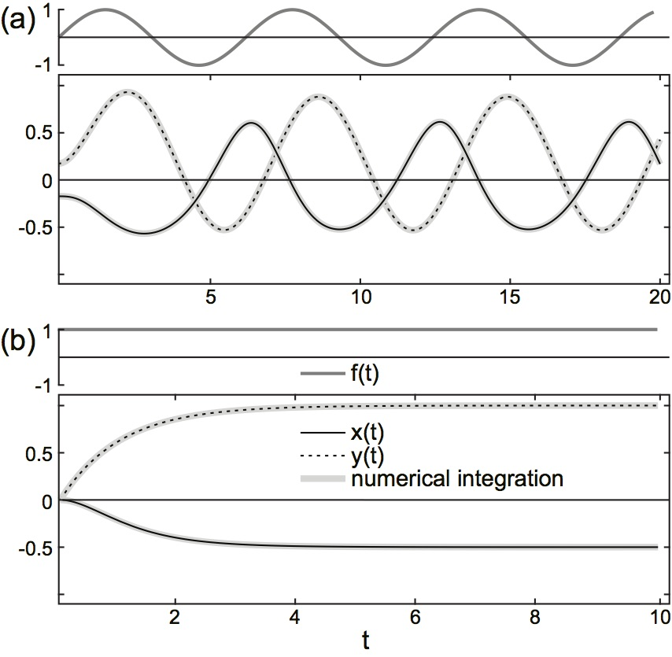
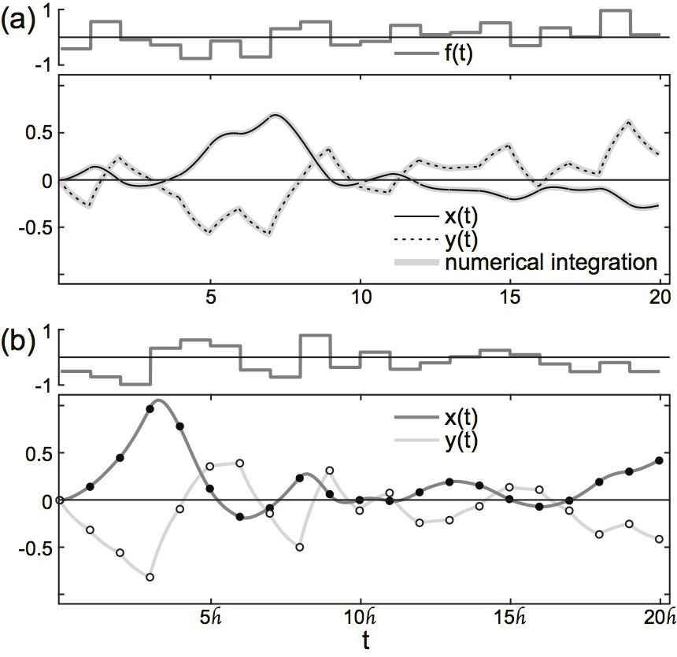

systems which yield unique and exact solutions
Heliyon 4: e00691, 2018
https://doi.org/10.1016/j.heliyon.2018.e00691

Abstract
Many physical systems exhibit random or stochastic components which shape or even drive their dynamic behavior. The stochastic models and equations describing such systems are typically assessed numerically, with a few exceptions allowing for a mathematically more rigorous treatment in the framework of stochastic calculus. However, even if exact solutions can be obtained in special cases, some results remain ambiguous due to the analytical foundation on which this calculus rests. In this work, we set out to identify the conceptual problem which renders stochastic calculus ambiguous, and exemplify a discrete algebraic framework which, for all practical intents and purposes, not just yields unique and exact solutions, but might also be capable of providing solutions to a much wider class of stochastic models.
Supplementary Information
Original title and section headings
The presentation of this study somewhat follows a theme which I found to be of relevance for the subject matter being addressed. Specifically, the article's title along with the headings of its sections were chosen from key concepts marking the iconic motion picture "The Matrix" (1999) by The Wachowski Brothers. However, due to understandably strict formatting guidelines in the online journal Heliyon, I was kindly asked to replace these headings for the final published version. In the case an interested Reader would want to fully enjoy the intended presentational frame of this study, the following table lists the original headings.
|
||||||||||||||||||||||||||||||||||||||||
A toy model not subject to the Itô-Stratanovich dilemma
Let us consider the following system of two first-order stochastic differential equations in $x(t)$ and $y(t)$: \begin{eqnarray*} \dot{x}(t) & = & a_1 x(t) + a_2 x(t) y(t) + a_3 y(t), \\ \dot{y}(t) & = & b_1 y(t) + b_2 f(t), \tag{1} \end{eqnarray*} where all $a_i, b_i \in \mathbb{Q}: a_i, b_i \neq 0$ are constants, and $f(t)$ denotes an arbitrary stochastic processes, e.g. Gaussian white noise. The differential equation for $y(t)$ encompasses the well-known stochastic model for Brownian motion, whereas $x(t)$ describes a process multiplicatively driven by the latter. Although system (1) is not subject to the Itô-Stratanovich dilemma dealt with in the article, we will present here its treatment within the context of the proposed finite algebraic approach, as model (1) has far-reaching applications, for instance as effective stochastic model of neurons driven by a single multiplicative, i.e. conductance, synaptic noise source (e.g., see [1]).
Let us further consider $f(t)$ as being a smooth function of $t$, then an explicit, formal solution of the above system (1) is given by \begin{eqnarray*} x(t) & = & x(0) \text{e}^{I_1(t)} + a_3 \int\limits_0^t ds I_2(s) \text{e}^{I_1(t)-I_1(s)}, \tag{2a} \\ y(t) & = & y(0) \text{e}^{b_1 t} + b_2 \int\limits_0^t ds \, f(s) \text{e}^{b_1 (t-s)}, \tag{2b} \end{eqnarray*} where \begin{eqnarray*} I_1(t) & = & \int\limits_0^t ds \left( a_1 + a_2 I_2(s) \right), \tag{3a} \\ I_2(t) & = & y(0) \text{e}^{b_1 t} + b_2 \int\limits_0^t ds \, f(s) \text{e}^{b_1 (t-s)}. \tag{3b} \end{eqnarray*} As an example, Fig. 1a illustrates for $f(t) = \sin(t)$ the numerical evaluation of this solution, and compares the latter to the numerical integration of the original system of differential equations (1).|  |
Figure 1: Representative solutions of (1).
Compared are the numerical solutions of the original system (grey solid) and the explicit analytical solution (black solid and dotted). (a): Eqs. (2a) and (2b) for $f(t) = \sin(t)$; (b): Eqs. (4) and (9) for $f(t) = const$. Model parameters: $a_1=-1, a_2=-1, a_3=-1$, $b_1=-1, b_2=1$, $x(0) \equiv x_0 = 0, y(0) \equiv y_0 = 0$, $\text{(a): } f(t) = \sin(t), \text{(b): } f(t) = 1$ |
The explicit analytic solution
Although Eqs. (2a) and (2b) provide, under the weak assumption of smooth and integrable $f(t)$ in the interval $[0,t]$, an explicit solution of system (1), a closed analytic form can, in general, not be obtained. A case which does, however, allow for such a solution is given if we assume $f(t)$ as being piecewise constant. Specifically, let $f(t) = f_t$ be constant in the left-open finite interval $(t,t+\Delta t]$, $\Delta t > 0$. For notational simplicity, but without loss of generality, we will first consider the interval $(0,\Delta t]$. In this case, Eq. (2b) directly yields $$ \tag{4} y(t) = y(0) \text{e}^{b_1 t} + \frac{b_2}{b_1} \left( \text{e}^{b_1 t} - 1 \right) f_0 $$ $\forall t \in (0,\Delta t]$.
The integration in Eq. (2a) is less straightforward and requires some more careful elaborations. Performing first the integration in (3a) and (3b), we obtain \begin{eqnarray*} I_1(t) & = & c_1 \left( \text{e}^{b_1 t} - 1 \right) + c_2 t, \\ I_2(t) & = & c_3 \left( \text{e}^{b_1 t} - 1 \right) + y(0), \end{eqnarray*} where \begin{eqnarray*} c_1 & = & \frac{a_2 b_2}{b_1^2} f_0 + \frac{a_2}{b_1} y(0), \\ c_2 & = & a_1 - \frac{a_2 b_2}{b_1} f_0, \\ c_3 & = & y(0) + \frac{b_2}{b_1} f_0. \end{eqnarray*} With this, $x(t)$ in Eq. (2a) takes the form \begin{eqnarray*} x(t) & = & \exp \left[ c_1 \text{e}^{b_1 t} + c_2 t \right] \\ & & \times \Bigg\{ x(0) \text{e}^{-c_1} + \frac{a_3 c_3}{b_1} \Gamma \left[ -\frac{c_2}{b_1}+1, c_1; 1, \text{e}^{b_1 t} \right] + \frac{a_3}{b_1} (y(0)-c_3) \Gamma \left[ -\frac{c_2}{b_1}, c_1; 1, \text{e}^{b_1 t} \right] \Bigg\}, \tag{5} \end{eqnarray*} where $\Gamma[a,b;t_0,t_1]$ denotes the generalized double incomplete gamma function $$ \tag{6} \Gamma[a,b;t_0,t_1] := \int\limits_{t_0}^{t_1} dt \, t^{a-1} \text{e}^{-b t}. $$
The result (5) can be further simplified by utilizing various properties of the gamma function. To that end, we perform the coordinate transformation $t \rightarrow bt$ in (6), which yields for $b \neq 0$ $$ \Gamma[a,b;t_0,t_1] = b^{-a} \int\limits_{b t_0}^{b t_1} dt \, t^{a-1} \text{e}^{-t} = b^{-a} \left( \gamma[a,b t_1] - \gamma[a,b t_0] \right), $$ where $$ \tag{7} \gamma[a,t] := \int_0^t dt \, t^{a-1} \text{e}^{-t} = t^a \sum\limits_{k=0}^{\infty} \frac{(-1)^k}{k!} \frac{t^k}{a+k} $$ denotes the lower incomplete gamma function. Finally, using the recurrence relation $$ \tag{8} \gamma[a,t] = (a-1) \gamma[a-1,t] - t^{a-1} \text{e}^{-t}, $$ we can express (5) as \begin{eqnarray*} x(t) & = & - \frac{a_3}{a_2} + \left( x(0) + \frac{a_3}{a_2} \right) \exp\left[ \frac{a_2}{b_1^2} \left( b_2 f_0 + b_1 y(0) \right) \left( \text{e}^{b_1 t} - 1 \right) + \frac{1}{b_1} \left( a_1 b_1 - a_2 b_2 f_0 \right) t \right] \\ & & - \frac{a_1 a_3}{a_2 b_1} \left( \frac{a_2}{b_1^2} \left( b_2 f_0 + b_1 y(0) \right) \right)^{\frac{1}{b_1^2} \left( a_1 b_1 - a_2 b_2 f_0 \right) } \left( \gamma\left[ -\frac{c_2}{b_1}, c_1 \text{e}^{b_1 t} \right] - \gamma\left[ -\frac{c_2}{b_1}, c_1 \right] \right) \\ & & \qquad \times \exp\left[ \frac{a_2}{b_1^2} \left( b_2 f_0 + b_1 y(0) \right) \text{e}^{b_1 t} + \frac{1}{b_1} \left( a_1 b_1 - a_2 b_2 f_0 \right) t \right]. \tag{9} \end{eqnarray*} A representative example of this solution is illustrated in Fig. 1b.
Before proceeding, it is important to note that the original integral definition of $\gamma[a,t]$ in Eq. (7) is only valid for $a \in \mathbb{C}$ with strictly positive $\text{Real}[a]$. However, its power series expansion can be shown to locally converge for all $t \in \mathbb{C}$ and $a \in \mathbb{C}/\mathbb{Z}^-: a \neq 0$, where $\mathbb{Z}^-$ denotes the set of all negative integer numbers. With this, Eq. (8) provides a valid recursion in the whole complex plane. In what follows, we will restrict to $t \in \mathbb{Q}$ and $a \in \mathbb{Q}/\mathbb{Z}^-$, as well as $\gamma[a,t] \in \mathbb{Q}$ defined by the sum in (7), with the upper summation limit replaced by a sufficiently large yet finite number $\mathcal{H}$ chosen according to precision requirements or the characteristics of the underlying physical system. Although this choice, along with parameters and variables being assumed within $\mathbb{Q}$ and not $\mathbb{R}$, might appear as irrelevant subtlety, it is essential for remaining within the discrete algebraic, i.e. finite, framework which forms the basis of the approach presented in the article. Moreover, each numerical or computational approach will naturally truncate expressions such as those occurring on the right-hand side of Eq. (7). Finally, we remark that, although $\gamma[a,t]$ has singularities for $a \in \mathbb{Z}^-$, it can easily be shown by careful evaluation of the singular terms in the power expansion (7), that the difference between the two gamma functions occurring in the solution (9) yields finite values. Taking these arguments together, the solution for $x(t)$ presented above and in the following sections, thus, must be considered as valid and is finite $\forall a \in \mathbb{Q}$.
The recursive algebraic solution
As pointed out above, the solution of (1) for constant $f(t)=f_0 \in \mathbb{Q}$ and boundary values $x(0), y(0) \in \mathbb{Q}$ obtained in the previous section, Eqs. (4) and (9), is valid $\forall t \in (0,\Delta t]$ with $\Delta t > 0$. With an appropriate choice of boundary values, this solution can be easily generalized to arbitrary $t > 0$. To that end, we assume that $f(t)$ is a piecewise constant function with constant step width $\Delta t$, defined as $$ \tag{10} f(t') = f_{t} = const\ \forall t' \in (t, t+\Delta t], $$ with $f_t \in \mathbb{Q}$. In this case, the solution given in Eqs. (4) and (9) generalizes to $$ \tag{11} y(t+s) = y(t) \text{e}^{b_1 s} + \frac{b_2}{b_1} \left( \text{e}^{b_1 s} - 1 \right) f_t $$ and \begin{eqnarray*} x(t+s) & = & - \frac{a_3}{a_2} + \left( x(t) + \frac{a_3}{a_2} \right) \exp\left[ \frac{a_2}{b_1^2} \left( b_2 f_t + b_1 y(t) \right) \left( \text{e}^{b_1 s} - 1 \right) + \frac{1}{b_1} \left( a_1 b_1 - a_2 b_2 f_t \right) s \right] \\ & & - \frac{a_1 a_3}{a_2 b_1} \left( \frac{a_2}{b_1^2} \left( b_2 f_t + b_1 y(t) \right) \right)^{\frac{1}{b_1^2} \left( a_1 b_1 - a_2 b_2 f_t \right) } \left( \gamma\left[ -\frac{c_2}{b_1}, c_1 \text{e}^{b_1 s} \right] - \gamma\left[ -\frac{c_2}{b_1}, c_1 \right] \right) \\ & & \qquad \times \exp\left[ \frac{a_2}{b_1^2} \left( b_2 f_t + b_1 y(t) \right) \text{e}^{b_1 s} + \frac{1}{b_1} \left( a_1 b_1 - a_2 b_2 f_t \right) s \right], \tag{12} \end{eqnarray*} respectively, where $s \in (0,\Delta t]$ and \begin{eqnarray*} c_1 & = & \frac{a_2 b_2}{b_1^2} f_t + \frac{a_2}{b_1} y(t), \\ c_2 & = & a_1 - \frac{a_2 b_2}{b_1} f_t. \end{eqnarray*} As $f_t$ can take arbitrary values, Eqs. (11) and (12) provide a valid piecewise exact solution of (1) in intervals of length $\Delta t$ even if $f(t)$ describes a discrete-time stochastic process. Figure 2a visualizes a representative example in the case values of $f_t$ at different times $t$ are drawn from a normal distribution, hence describes a discrete-time stochastic process which, in the statistical limit, resembles a Gaussian white noise process.
|  |
Figure 2: Representative solutions of (1).
Compared are the numerical solutions of the original system (grey solid) solutions with the explicit analytical solution. (a): Eqs. (11) and (12) for $f(t) = f_t = const$ for $t \in (t, t+\Delta t]$) and recursive algebraic solution; (b): Eqs. (13) and (14) for $f_n = const$ $\forall n \in \mathbb{N}$. Model parameters: $a_1=-1, a_2=-1, a_3=-1$, $b_1=-1, b_2=1$, $x(0) \equiv x_0 = 0, y(0) \equiv y_0 = 0$, $f_t$ and $f_n$ were chosen from a normal distribution with mean 0 and standard deviation 0.4 |
Before proceeding towards a recursive algebraic form of the above solution, it is important to note that $\Delta t$ used here plays a role which fundamentally differs from the notion of "step size" utilized in numerical integration schemes. As pointed out in the article, the latter serves as a mere quantitative measure of numerical discretization at the level of differential equations, and as such is subject to constraints to ensure not only the numerical stability of the solution, but also its numerical accuracy. However, in general, numerical integration can only deliver approximate solutions which typically accumulate numerical error. This is not the case in the solution presented above. Indeed, Eqs. (11) and (12) provide the exact analytic form of the solution of the system of differential equations (1) under the assumption (10), with $\Delta t$ serving as a quantifier for the level of discretization of an analytically exact expression which is dictated solely by the "sampling rate" with which the input $f(t)$ drives the system. Thus, in contrast to the notion of step size in numerical integration schemes, $\Delta t$ is endowed with a direct link to physical reality. Recalling the fact that each physical observable is subject to constraints regarding its precision, each experimental observation can only deliver a finite and discrete set of values for a probed observable. However, such a set can always be expressed in a form similar to (10). In this sense, the solution in Eqs. (11) and (12) and, more generally, the approach presented here are consistent with the principles highlighted in Section 3 of the article, with $\Delta t$ quantifying the limitations imposed by the process of measurement.
This independence of the numerical precision of our solution from $\Delta t$ allows us to distance ourselves from the notion of "analysis" and, ultimately, the ideal yet unphysical construct of "continuity", and opens the possibility to deduce a recursive algebraic form of (11) and (12). Both of these equations are already recursive in the sense that the solution at $t+s$ with $s \in (0,\Delta t]$ depends solely on the solution at time $t$, and the constant value of $f(t) = f_t$ in the interval $(t, t+\Delta t]$. The values of the state variables $x(s)$ and $y(s)$ within open intervals $s \in (t, t+\Delta t)$ thus become irrelevant due to the considered discretization, and can be discarded. With this, $t$ acts as a mere label, and, without loss of generality, can be replaced by $n \in \mathbb{N}: n \geq 0$. Equation (11) then takes the discrete, i.e. recursive, algebraic form $$ \tag{13} y_{n+1} = y_n \text{e}^{b_1 \mathscr{h}} + \frac{b_2}{b_1} \left( \text{e}^{b_1 \mathscr{h}} - 1 \right) f_n, $$ where $\mathscr{h} := \Delta t$ for notational convenience. Similarly, $x(t)$ yields \begin{eqnarray*} x_{n+1} & = & - \frac{a_3}{a_2} + \left( x_n + \frac{a_3}{a_2} \right) \exp\left[ \frac{a_2}{b_1^2} \left( b_2 f_n + b_1 y_n \right) \left( \text{e}^{b_1 \mathscr{h}} - 1 \right) + \frac{1}{b_1} \left( a_1 b_1 - a_2 b_2 f_n \right) \mathscr{h} \right] \\ & & - \frac{a_1 a_3}{a_2} \, \tilde{\gamma}\left[ b_1, \frac{a_2 b_2}{b_1^2} f_n + \frac{a_2}{b_1} y_n, a_1 - \frac{a_2 b_2}{b_1} f_n \right] \\ & & \qquad \times \exp\left[ \frac{a_2}{b_1^2} \left( b_2 f_n + b_1 y_n \right) \text{e}^{b_1 \mathscr{h}} + \frac{1}{b_1} \left( a_1 b_1 - a_2 b_2 f_n \right) \mathscr{h} \right], \tag{14} \end{eqnarray*} where $$ \tilde{\gamma}\left[ a, b, c \right] = \frac{1}{a} \, b^{\frac{c}{a}} \left( \gamma\left[ -\frac{c}{a}, b \, \text{e}^{a \mathscr{h}} \right] - \gamma\left[ -\frac{c}{a}, b \right] \right) = \sum\limits_{k=0}^{\mathcal{H}} \frac{(-1)^k}{k!} \frac{b^k}{ak-c} \left( \text{e}^{(ak-c) \mathscr{h}} - 1 \right) \tag{15} $$ with $a,b,c \in \mathbb{Q}$, and $\mathscr{h} \in \mathbb{Q}$, $\mathcal{H} \in \mathbb{N}$ denoting sufficiently small and large numbers, respectively, confined by experimental precision or other constraints imposed by physical reality. A representative example of the recursive algebraic solution is presented in Fig. 2b.
It is important to note that, due to their recursive nature, Eqs. (13) and (14) describe the exact incremental evolution of the system in finite and strictly positive steps $\mathscr{h} \in \mathbb{Q}$. In this sense, the obtained recursive algebraic solution is conceptually equivalent to a formulation in terms of differential equations, which describe the evolution of a given system in infinitesimal steps $dt$. Moreover, the algebraic nature of (13) and (14) ensures that the solution is not only unique, but also finite for arbitrary $\mathscr{h}$ and $n$, irrespective of the convergence properties for $n \rightarrow \infty$. With this, we next will recover the explicit algebraic form for $x_n$ and $y_n$, thus move towards an exact solution of (1).
The explicit algebraic solution
Although Eqs. (13) and (14) appear to have a rather delicate mathematical form, both belong to the class of linear inhomogeneous recursions for which a whole host of techniques is readily available (e.g., see [2]). In order to apply the latter, we first introduce for notational convenience \begin{eqnarray*} A & := & \text{e}^{b_1 \mathscr{h}}, \\ B_n & := & \frac{b_2}{b_1} \left( \text{e}^{b_1 \mathscr{h}} - 1 \right) f_n \tag{16} \end{eqnarray*} and \begin{eqnarray*} \mathcal{A}_n & := & \exp\left[ \frac{a_2}{b_1^2} \left( b_2 f_n + b_1 y_n \right) \left( \text{e}^{b_1 \mathscr{h}} - 1 \right) + \frac{1}{b_1} \left( a_1 b_1 - a_2 b_2 f_n \right) \mathscr{h} \right], \\ \mathcal{B}_n & := & - \frac{a_3}{a_2} + \frac{a_3}{a_2} \exp\left[ \frac{a_2}{b_1^2} \left( b_2 f_n + b_1 y_n \right) \text{e}^{b_1 \mathscr{h}} + \frac{1}{b_1} \left( a_1 b_1 - a_2 b_2 f_n \right) \mathscr{h} \right] \nonumber \\ & & \qquad \qquad \times \Bigg\{ \exp\left[ -\frac{a_2}{b_1^2} \left( b_2 f_n + b_1 y_n \right) \right] - a_1 \tilde{\gamma}\left[ b_1, \frac{a_2 b_2}{b_1^2} f_n + \frac{a_2}{b_1} y_n, a_1 - \frac{a_2 b_2}{b_1} f_n \right] \Bigg\}. \tag{17} \end{eqnarray*} With this, Eqs. (13) and (14) take the simpler forms $$ \tag{18} x_{n+1} = \mathcal{A}_n x_n + \mathcal{B}_n $$ and $$ \tag{19} y_{n+1} = A y_n + B_n, $$ respectively, with $n \geq 0$. In what follows, we will solve (18) and (19) utilizing what could be termed "operator approach", as both $A$ and $\mathcal{A}_n$ act as operators on the respective state variables $y_n$ and $x_n$ at step $n$, thus evolving the system to step $n+1$.
First, we solve (19) for the state variable $y_n$. It can easily be shown that repeated application of $A$ yields $$ \tag{20} y_n = A^n y_0 + \sum\limits_{i=0}^{n-1} A^{n-1-i} B_i $$ for $n \in \mathbb{N}: n \geq 1$, which, after inserting $A$ and $B_n$ defined in (16), takes the form $$ \tag{21} y_n = \text{e}^{n b_1 \mathscr{h}} y_0 + \frac{b_2}{b_1} \left( \text{e}^{b_1 \mathscr{h}} - 1 \right) \tilde{\mathscr{F}}_{n-1}, $$ where $$ \tag{22} \tilde{\mathscr{F}}_n := \sum\limits_{i=0}^{n} \text{e}^{(n-i) b_1 \mathscr{h}} f_i. $$ Equation (21) can be viewed as the explicit algebraic solution of the original differential equation for $y(t)$ in (1) for piecewise constant inputs $f_t$ within a discrete finite mathematical framework, delivering the exact values of the state variable $y(t)$ at discrete times $t = n\mathscr{h}$. Interesting here is the occurrence of the term $\tilde{\mathscr{F}}_n$, which describes for each $n$ the weighted sum over past inputs $f_i, 0 \leq i < n$. The presence of this term, however, is not surprising, as the original differential equation for $y(t)$ describes a "filtered" version of the input $f(t)$, i.e. a process which interlinks input values at different times through an exponentially decay with time constant $b_1$. Although this, and the definition (22) of $\tilde{\mathscr{F}}_n$, suggest non-locality in time, $\tilde{\mathscr{F}}_n$ is subject to the linear and, in general, inhomogeneous recursion $$ \tag{23} \tilde{\mathscr{F}}_0 = f_0, \tilde{\mathscr{F}}_{n+1} = \text{e}^{b_1 \mathscr{h}} \tilde{\mathscr{F}}_n + f_{n+1}, n \geq 0. $$ Thus, for arbitrary $n$, the value of $\tilde{\mathscr{F}}_n$ only depends on its value $\tilde{\mathscr{F}}_{n-1}$ at the previous time step $n-1$ and the actual input $f_n$ at step $n$, so remains local in time.
In a similar fashion, successive application of $\mathcal{A}_i$ for $i \in [0, n-1]$ in Eq. (18) yields the explicit expression $$ \tag{24} x_n = \left( \prod\limits_{i=0}^{n-1} \mathcal{A}_i \right) x_0 + \sum\limits_{i=1}^{n-1} \left( \prod\limits_{j=i}^{n-1} \mathcal{A}_j \right) \mathcal{B}_{i-1} + \mathcal{B}_{n-1} $$ for the state variable $x_n$ with $n \in \mathcal{N}: n \geq 1$. In contrast to $y_n$, however, the evaluation of this expression is slightly less straightforward. After lengthy calculations (see section "Appendix: Exact algebraic solution of $x(t)$" below), we obtain an exact explicit algebraic solution for $x(t)$ at discrete times $t = n \mathscr{h}, n \in \mathbb{N}: n \geq 1$ in form of $$ \tag{25} x_n = -\frac{a_3}{a_2} + \mathcal{M}_{n-1} \text{e}^{n a_1 \mathscr{h}} \left( x_0 + \frac{a_3}{a_2} - \frac{a_1 a_3}{a_2} \, \mathcal{P}_{n-1} \right), $$ where $\mathcal{M}_{n}, n \geq 0$ is given by the explicit expression $$ \tag{26} \mathcal{M}_n = \exp \bigg[ \frac{a_2 b_2}{b_1^2} \left( \text{e}^{b_1 \mathscr{h}} - 1 \right) \tilde{\mathscr{F}}_n - \frac{a_2 b_2}{b_1} \mathscr{h} \mathscr{F}_n + \frac{a_2}{b_1} \left( \text{e}^{(n+1) b_1 \mathscr{h}} - 1 \right) y_0 \bigg], $$ and the coefficients $\mathcal{P}_n$ by the inhomogeneous linear recursion \begin{eqnarray*} \mathcal{P}_0 & = & \exp \left[ \frac{a_2 b_2}{b_1^2} f_0 + \frac{a_2}{b_1} y_0 \right] \tilde{\gamma} \left[ b_1 , \frac{a_2 b_1}{b_1^2} f_0 + \frac{a_2}{b_1} y_0 , a_1 - \frac{a_2 b_2}{b_1} f_0 \right], \nonumber \\ \mathcal{P}_{n+1} & = & \mathcal{P}_n + \exp \left[ \frac{a_2 b_2}{b_1} \mathscr{h} \mathscr{F}_{n+1} + \frac{a_2 b_2}{b_1^2} (1 - b_1 \mathscr{h}) f_{n+1} + \frac{a_2}{b_1} y_0 - (n+1) a_1 \mathscr{h} \right] \nonumber \\ & & \qquad \times \tilde{\gamma} \left[ b_1 , \frac{a_2 b_2}{b_1^2} \left( 1 - \text{e}^{-b_1 \mathscr{h}} \right) \tilde{\mathscr{F}}_{n+1} + \frac{a_2 b_2}{b_1^2} \text{e}^{-b_1 \mathscr{h}} f_{n+1} + \frac{a_2}{b_1} \text{e}^{(n+1) b_1 \mathscr{h}} y_0 , a_1 - \frac{a_2 b_2}{b_1} f_{n+1} \right], \tag{27} \end{eqnarray*} valid for all $n \geq 0$. Here, $\mathscr{F}_n$ denotes the linear (unweighted) sum over all previous inputs, i.e. $$ \tag{28} \mathscr{F}_n := \sum\limits_{i=0}^{n} f_i, $$ obeying the linear recursive relation $$ \tag{29} \mathscr{F}_0 = f_0, \mathscr{F}_{n+1} = \mathscr{F}_n + f_{n+1}, n \geq 0. $$
The exact algebraic solution of (1) presented above in Eqs. (21) and (25) is interesting in various respects. Firstly, and most importantly, we note that, although both expressions are explicit in the initial state variables $x_0$ and $y_0$, the coefficients still contain recursive terms depending on the full history of the inputs $f_n$ in form of the auxiliary variables $\mathscr{F}_n$ and $\tilde{\mathscr{F}}_n$ (see Eqs. (28) and (22), respectively). The presence of these terms is neither surprising nor conceptually at odds with results obtained when tackling the original system of differential equations (1) within the confines of differential calculus, i.e. an analytic approach. Integrating a differential equation, in fact the very concept of an "integral" in standard analysis, is by definition equivalent to an infinitesimally-paced summation over all functional values of the integrand. Although in the case of the differential system (1) with stochastic term $f(t)$ such an integration is, in general, not possible in a mathematically rigorous sense without ambiguities, a finitely-paced summation within a discrete framework can be performed, as demonstrated above, leading to the presence of highly nonlinear yet finite and well-defined terms $\mathcal{M}_n$ and $\mathcal{P}_n$ in (26) and (27) containing the "integrated" history of the system.
Secondly, and somewhat surprisingly, the coefficients $\mathcal{M}_n$ and $\mathcal{P}_n$ allow, in the case of $\mathcal{M}_n$, for a simple explicit and, in the case of $\mathcal{P}_n$, for a linear recursive expression. Moreover, in both cases, for each given time step $n$, the defining expressions depend only on the current input $f_n$ and their linear and weighted sums $\mathscr{F}_n$ and $\tilde{\mathscr{F}}_n$, respectively, which by themselves follow simple recursive rules (Eqs. (28) and (22), respectively). Thus, values for $x_n$ and $y_n$ only depend on the current input and the value of a number of auxiliary variables at step $n$, i.e. are strictly local in time.
|
Figure 3: Representative explicit algebraic solution of (1).
Compared are the numerical solutions of the original system (solid and dashed) solutions with the explicit algebraic solution (Eqs. (21) and (25); dots and triangles). (a): Constant input $f_n=const\ \forall n \geq 0$ to systems with different intrinsic time constants with $\mathscr{h} = 5$; (b): $f_n=\sin[(n+1)\mathscr{h}]$. Model parameters: $\text{(a): } x_0=1, y_0=0, f_n=0.5\ \forall n \geq 0$; $\text{slow dynamics (solid): } a_1=-0.01$, $a_2=-1, a_3=-1, b_1=-0.1, b_2=2$; $\text{fast dynamics (dashed): } a_1=-10$, $a_2=-1000, a_3=-1000, b_1=-1, b_2=1$; $\text{(b): } a_1=-1, a_2=-1, a_3=-1$, $b_1=-1, b_2=1, x_0=0, y_0=0$ |
Finally, and as already detailed above, the parameter $\mathscr{h}$ has an interpretation which differs from the notion of "step size" in numerical solutions of differential equations. The latter is crucial for the accuracy of the numerical solution, especially when considering systems whose intrinsic dynamics is fast, in which case the integration step must be chosen small enough to faithfully capture dynamical properties. In contrast, the parameter $\mathscr{h}$ in Eqs. (21) and (25) is constraint by the sampling rate of the inputs $f_n$, thus linked to experimental constrains or the resolution of the discrete-time stochastic process used in numerical approaches. To illustrate this point, Fig. 3a compares the case of constant input $f_n = const\ \forall n \geq 0$ in two systems with fast and slow internal dynamics. Whereas in the former case, the numerical solution of the original differential equations requires a significantly smaller time step in order to capture the intrinsic dynamics (Fig. 3a, dashed), (21) and (25) yield precise solutions even if $\mathscr{h}$ is chosen much larger than the smallest time constant occurring in the original system. However, a more thorough investigation of this aspect of the presented discrete algebraic framework is required for a justifiable generalization, and lies outside the scope of this study.
Appendix: Exact algebraic solution of $x(t)$
For notational convenience, we define \begin{eqnarray*} d_1 & := & \dfrac{a_2 b_2}{b_1^2} \left( \text{e}^{b_1 \mathscr{h}} - 1 - b_1 \mathscr{h} \right), \\ d_2 & := & \dfrac{a_2}{b_1} \left( \text{e}^{b_1 \mathscr{h}} - 1 \right), \\ d_3 & := & a_1 \mathscr{h}, \\ d_4 & := & \dfrac{a_3}{a_2}, \\ d_5 & := & \dfrac{a_1 a_3}{a_2 b_1}, \\ d_6 & := & \dfrac{a_2 b_2}{b_1^2}, \\ d_7 & := & \dfrac{a_2}{b_1}, \\ d_8 & := & \dfrac{a_1}{b_1}, \end{eqnarray*} as well as \begin{eqnarray*} \mathcal{L}_n & := & d_1 f_n + d_2 y_n, \\ \mathcal{M}_n & := & \exp\left[ \sum_{i=0}^{n} \mathcal{L}_i \right], \\ \mathcal{N}_n & := & d_6 f_n + d_7 y_n. \end{eqnarray*} Using (21), it can be shown that $\mathcal{L}_n$ allows for an explicit expression in terms of $\tilde{\mathscr{F}}_n$ defined in (22), $$ \mathcal{L}_n = d_1 \left( \tilde{\mathscr{F}}_n - \tilde{\mathscr{F}}_{n-1} \right) + b_2 d_2 \mathscr{h} \tilde{\mathscr{F}}_{n-1} + d_2 y_0 \text{e}^{n b_1 \mathscr{h}} $$ for $n \geq 1$, and obeys the linear inhomogeneous recursion $$ \mathcal{L}_0 = d_1 f_0 + d_2 y_0, \mathcal{L}_{n+1} = \text{e}^{b_1 \mathscr{h}} \mathcal{L}_n + d_1 ( f_{n+1} - f_n ) + b_2 d_2 \mathscr{h} f_n, n \geq 0. $$ In a similar fashion, the explicit form of $\mathcal{M}_n$ is given by Eq. (26), obeying the simple recursive relation $$ \mathcal{M}_0 = \text{e}^{\mathcal{L}_0}, \mathcal{M}_{n+1} = \mathcal{M}_n \text{e}^{\mathcal{L}_{n+1}}, n \geq 0. $$ Finally, $\mathcal{N}_n$ is explicitly given by $$ \mathcal{N}_n = d_6 \left( \tilde{\mathscr{F}}_n - \tilde{\mathscr{F}}_{n-1} \right) + d_7 y_0 \text{e}^{n b_1 \mathscr{h}} $$ for $n \geq 1$, and follows the linear inhomogeneous recursion $$ \mathcal{N}_0 = d_6 f_0 + d_7 y_0, \mathcal{N}_{n+1} = \text{e}^{b_1 \mathscr{h}} \mathcal{N}_n + d_6 ( f_{n+1} - f_n ), n \geq 0. $$ With this, $\mathcal{A}_n$ and $\mathcal{B}_n$ defined in (17) take $\forall n \geq 0$ the form \begin{eqnarray*} \mathcal{A}_n & = & \text{e}^{ \mathcal{L}_n + d_3 }, \\ \mathcal{B}_n & = & -d_4 + d_4 \text{e}^{ \mathcal{L}_n + d_3 } - b_1 d_5 \text{e}^{ \mathcal{L}_n + \mathcal{N}_n + d_3 } \tilde{\gamma}_n, \end{eqnarray*} where $\tilde{\gamma}_n := \tilde{\gamma}(a,b,c)$ with \begin{eqnarray*} a & = & b_1, \\ b & = & d_6 \left( 1 - \text{e}^{-b_1 \mathscr{h}} \right) \tilde{\mathscr{F}}_n + d_6 \text{e}^{-b_1 \mathscr{h}} f_n + d_7 \text{e}^{n b_1 \mathscr{h}} y_0, \\ c & = & a_1 - b_1 d_6 f_n. \end{eqnarray*}
We first calculate $x_n$ for $n=1$. From Eq. (18) with $n=0$, or (24) with $n=1$, we immediately have $$ x_1 = \mathcal{A}_0 x_0 + \mathcal{B}_0 = \mathcal{M}_0 \text{e}^{d_3} x_0 - d_4 + d_4 \mathcal{M}_0 \text{e}^{d_3} - b_1 d_5 \mathcal{M}_0 \text{e}^{\mathcal{N}_0 + d_3} \tilde{\gamma}_0, $$ which, with $\mathcal{P}_0$ defined in (27), is identical to (25) for $n=1$.
For $n > 1$, we simplify the first term in (24): $$ \prod\limits_{i=0}^{n-1} \mathcal{A}_i = \exp\left[ \sum\limits_{i=0}^{n-1} \mathcal{L}_i + \sum\limits_{i=0}^{n-1} d_3 \right] \equiv \mathcal{M}_{n-1} \text{e}^{n d_3}. $$ Observing that $$ \prod\limits_{j=i}^{n-1} \mathcal{A}_j = \frac{\prod\limits_{j=0}^{n-1} \mathcal{A}_j}{\prod\limits_{j=0}^{i-1} \mathcal{A}_j} \equiv \frac{\mathcal{M}_{n-1}}{\mathcal{M}_{i-1}} \text{e}^{(n-i) d_3}, $$ the second term in (24) takes the form $$ \left( \prod\limits_{j=i}^{n-1} \mathcal{A}_j \right) \mathcal{B}_{i-1} = -d_4 \frac{\mathcal{M}_{n-1}}{\mathcal{M}_{i-1}} \text{e}^{(n-i) d_3} + d_4 \frac{\mathcal{M}_{n-1}}{\mathcal{M}_{i-1}} \text{e}^{\mathcal{L}_{i-1} + (n-i+1) d_3} - b_1 d_5 \frac{\mathcal{M}_{n-1}}{\mathcal{M}_{i-1}} \text{e}^{\mathcal{L}_{i-1} + \mathcal{N}_{i-1} + (n-i+1) d_3} \tilde{\gamma}_{i-1}. $$ Thus, for $n > 1$, $$ x_n = -d_4 + \mathcal{M}_{n-1} \text{e}^{n d_3} x_0 + d_4 \mathcal{M}_{n-1} \text{e}^{n d_3} - b_1 d_5 \mathcal{M}_{n-1} \text{e}^{n d_3} \sum\limits_{i=0}^{n-1} \frac{\text{e}^{\mathcal{L}_{i} + \mathcal{N}_{i} - i d_3}}{\mathcal{M}_{i}} \tilde{\gamma}_{i}, $$ where we used the identity $$ \text{e}^{d_3} \sum\limits_{i=1}^{n-1} \frac{\text{e}^{\mathcal{L}_{i-1} - i d_3}}{\mathcal{M}_{i-1}} - \sum\limits_{i=1}^{n-1} \frac{\text{e}^{-i d_3}}{\mathcal{M}_{i-1}} = 1 - \frac{\text{e}^{-(n-1) d_3}}{\mathcal{M}_{n-2}}, $$ which is valid $\forall n > 1$.
What remains is to simplify the sum occurring in the last term in $x_n$ above. The presence of $\tilde{\gamma}_n$ and its dependence on an arbitrary sequence $f_n$ renders the search for a closed-form or explicit expression difficult or perhaps impossible. However, observing that $$ \frac{\text{e}^{\mathcal{L}_n + \mathcal{N}_n}}{\mathcal{M}_n} = \exp\left[ b_1 d_6 \mathscr{h} \mathscr{F}_n + d_6 f_n ( 1 - b_1 \mathscr{h} ) + d_7 y_0 \right] $$ and introducing $$ \tilde{\mathcal{P}}_n := \exp\left[ b_1 d_6 \mathscr{h} \mathscr{F}_n + d_6 f_n ( 1 - b_1 \mathscr{h} ) + d_7 y_0 - n d_3 \right] \tilde{\gamma}_n $$ $\forall n \geq 0$, we obtain $$ x_n = -d_4 + \mathcal{M}_{n-1} \text{e}^{n d_3} x_0 + d_4 \mathcal{M}_{n-1} \text{e}^{n d_3} - b_1 d_5 \mathcal{M}_{n-1} \text{e}^{n d_3} \sum\limits_{i=0}^{n-1} \tilde{\mathcal{P}}_i. $$ Finally, defining $$ \mathcal{P}_n := \sum\limits_{i=0}^{n-1} \tilde{\mathcal{P}}_i $$ and noting that the so-defined $\mathcal{P}_n$ obeys the recursive relation $$ \mathcal{P}_0 = \tilde{\mathcal{P}}_0, \mathcal{P}_{n+1} = \mathcal{P}_n + \tilde{\mathcal{P}}_{n+1} , n \geq 0 , $$ we arrive at (25).
Dependency of the results on $\mathcal{H}$
A representative example of the dependency of the algebraic solution on $\mathcal{H}$ is presented in Fig. 4, using a sinusoidal input as illustration. The parameters used in this example are identical to the system presented here (see Fig. 2b). For the purpose of simplicity, we restrict here to a consideration of $\mathcal{H}$ only for $\tilde{\gamma}[a,b,c]$, see (15). All other analytic functions, such as the exponential, are subject to the forced and exorbitant high precision goal of $10^{-100}$, applied throughout the study (in the article and the supplementary information presented here).
As can be seen, for $\mathcal{H}$ below 5, a significant error enters the algebraic solution for $x(t)$. However, this is to be expected, as $\tilde{\gamma}[a,b,c]$ in these cases is approximated by the lowest orders in its power expansion. Specifically, we have $$ \tilde{\gamma}[a,b,c] = -\frac{a}{c} \left(e^{-c}-1\right) b^{-c/a} $$ for $\mathcal{H} = 0$, $$ \tilde{\gamma}[a,b,c] = a b^{-c/a} \left(-\frac{b \left(e^{a-c}-1\right)}{a-c}-\frac{e^{-c}-1}{c}\right) $$ for $\mathcal{H} = 1$, and $$ \tilde{\gamma}[a,b,c] = a b^{-c/a} \left(\frac{b^2 \left(e^{2 a-c}-1\right)}{2 (2 a-c)}-\frac{b \left(e^{a-c}-1\right)}{a-c}-\frac{e^{-c}-1}{c}\right) $$ for $\mathcal{H} = 2$. Given the conceptual meaning of $\mathcal{H}$ as the upper limit of the power considered in the power expansion of analytic functions, it is then clear that such a heavily approximated solution must deviate from a solution which is obtained with the numerical precision goal of $10^{-100}$ used in the study.
|
Figure 4: Representative examples of the solutions of the system of differential equations (1).
Compared are the numerical integration of the original system (solid) and the explicit analytical solution (25) for $x(t)$ using a sinusoidal input $f_n=\sin[(n+1) \mathscr{h}]$ for different values of $\mathcal{H}$. (a): $\mathcal{H}=0$, (b): $\mathcal{H}=1$, (c): $\mathcal{H}=2$, (d): $\mathcal{H}=5$, (e): $\mathcal{H}=10$. The system's parameters are identical to those used for Fig. 2b above. |
Somewhat surprisingly, already a value of $\mathcal{H} = 5$ suffices to arrive at a solution which can be considered as indistinguishable from the "exact" (in the sense of a numerical evaluation with an exorbitantly high precision goal) solution. Despite this finding, in all numerical evaluations utilizing the algebraic solutions (recursive or explicit) throughout the study, a value of $\mathcal{H} = 100$ was used.
References| [1] | Rudolph, M. and Destexhe A., Neural Comput. 15, 2577 (2003). |
| [2] | Wilf, H. S., Generatingfunctionology (3rd edition, CRC Press, 2005). |